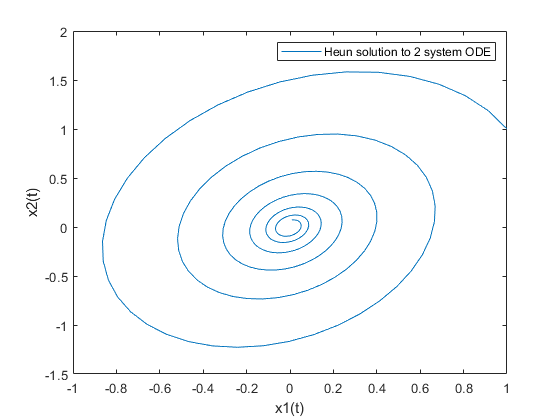
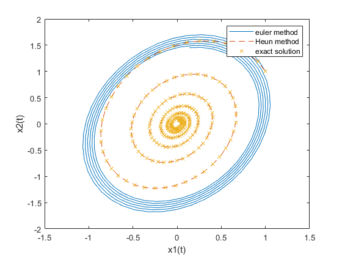

Systems Lab: Systems of ODEs in MATLAB
In this lab, you will write your own ODE system solver for the Heun method (aka the Improved Euler method), and compare its results to those of ode45.
You will also learn how to save images in MATLAB.
Opening the m-file lab4.m in the MATLAB editor, step through each part using cell mode to see the results. Compare the output with the PDF, which was generated from this m-file.
There are four (4) exercises in this lab that are to be handed in on the due date of the lab. Write your solutions in a separate file, including appropriate descriptions in each step. Save the m-files and the pdf-file for Exercise 4 and submit them on Quercus.
Contents
Student Information
Student Name: Patricia Nadia Krisanti
Student Number: 1009669404
Exercise 1
Objective: Write your own ODE system solver using the Heun/Improved Euler Method and compare it to ode45.
Details: Consider the system of 2 ODEs:
x1'=f(t,x1,x2), x2'=g(t,x1,x2)
This m-file should be a function which accepts as variables (t0,tN,x0,h), where t0 and tN are the start and end points of the interval on which to solve the ODE, h is the stepsize, and x0 is a vector for the initial condition of the system of ODEs x(t0)=x0. Name the function solvesystem_<UTORid>.m (Substitute your UTORid for UTORid). You may also want to pass the functions into the ODE the way ode45 does (check MATLAB labs 2 and 3).
Your m-file should return a row vector of times and a matrix of approximate solution values (the first row has the approximation for x1 and the second row has the approximation for x2).
Note: you will need to use a loop to do this exercise. You will also need to recall the Heun/Improved Euler algorithm learned in lectures.
%{ function [x,y]=solvesystem_krisanti(f,g, t0, tN, x0, h) %f,start, endpoint, initial condition, stepsize x=t0:h:tN; %disp(x); size(x) y=zeros(2, length(x)); y(1,1)=x0(1); y(2,1)=x0(2); num=size(x); for i=1:(num(2)-1) kf=f(x(i),y(1,i),y(2,i)); %y(tn+1) = y(n) + (1/2) * h * (f(tn,yn) + f(tn+h, yn+h*f(tn,yn)) kg=g(x(i),y(1,i),y(2,i)); x1=y(1,i)+h.*kf; x2=y(2,i)+h.*kg; y(1, i+1)=(kf+f(x(i+1),x1,x2)).*(1/2).*h + y(1,i); y(2, i+1)=(kg+g(x(i+1),x1,x2)).*(1/2).*h + y(2,i); end [ox,oy]=ode45(@(t,y) [f(t, y(1), y(2)); g(t, y(1), y(2))], [t0,tN] ,x0); %plot(x,y) %legend("mine", "ode45") end %x1' = x1/2 - 2*x2, x2' = 5*x1 - x2 %with initial condition x(0)=(1,1). %Use your method from Exercise 1 to approximate the solution from t=0 to t=4*pi with step size h=0.05. %}
Exercise 2
Objective: Compare Heun with an exact solution
Details: Consider the system of ODEs
x1' = x1/2 - 2*x2, x2' = 5*x1 - x2
with initial condition x(0)=(1,1).
Use your method from Exercise 1 to approximate the solution from t=0 to t=4*pi with step size h=0.05.
Compute the exact solution (by hand) and plot both phase portraits on the same figure for comparison.
Your submission should show the construction of the inline function, the use of your Heun's method to obtain the solution, a construction of the exact solution, and a plot showing both. In the comments, include the exact solution.
Label your axes and include a legend.
x1=@(t,x1, x2) x1/2-2*x2 x2=@(t,x1,x2) 5*x1 - x2 [x,y]=solvesystem_krisanti(x1, x2, 0, 4*pi, [1,1], 0.05) plot(y(1,:),y(2,:)) legend('Heun solution to 2 system ODE') xlabel('x1(t)') ylabel('x2(t)') %exact solution for system with initial condition x(0)=(1 1) is %c1=1/20 %c2=17/(20sqrt(151)) %s=sqrt(151) %o=sqrt(151)/4 %x1=c1exp(-t/4).*(3cos(ot)-s*sin(ot)+c2*exp(-t/4)*(s*cos(ot)+3*sin(ot)) %x1=c1exp(-t/4).*(20*cos(ot)+c2*exp(-t/4)*(20*sin(ot))
x1 =
function_handle with value:
@(t,x1,x2)x1/2-2*x2
x2 =
function_handle with value:
@(t,x1,x2)5*x1-x2
ans =
1 252
x =
Columns 1 through 7
0 0.0500 0.1000 0.1500 0.2000 0.2500 0.3000
Columns 8 through 14
0.3500 0.4000 0.4500 0.5000 0.5500 0.6000 0.6500
Columns 15 through 21
0.7000 0.7500 0.8000 0.8500 0.9000 0.9500 1.0000
Columns 22 through 28
1.0500 1.1000 1.1500 1.2000 1.2500 1.3000 1.3500
Columns 29 through 35
1.4000 1.4500 1.5000 1.5500 1.6000 1.6500 1.7000
Columns 36 through 42
1.7500 1.8000 1.8500 1.9000 1.9500 2.0000 2.0500
Columns 43 through 49
2.1000 2.1500 2.2000 2.2500 2.3000 2.3500 2.4000
Columns 50 through 56
2.4500 2.5000 2.5500 2.6000 2.6500 2.7000 2.7500
Columns 57 through 63
2.8000 2.8500 2.9000 2.9500 3.0000 3.0500 3.1000
Columns 64 through 70
3.1500 3.2000 3.2500 3.3000 3.3500 3.4000 3.4500
Columns 71 through 77
3.5000 3.5500 3.6000 3.6500 3.7000 3.7500 3.8000
Columns 78 through 84
3.8500 3.9000 3.9500 4.0000 4.0500 4.1000 4.1500
Columns 85 through 91
4.2000 4.2500 4.3000 4.3500 4.4000 4.4500 4.5000
Columns 92 through 98
4.5500 4.6000 4.6500 4.7000 4.7500 4.8000 4.8500
Columns 99 through 105
4.9000 4.9500 5.0000 5.0500 5.1000 5.1500 5.2000
Columns 106 through 112
5.2500 5.3000 5.3500 5.4000 5.4500 5.5000 5.5500
Columns 113 through 119
5.6000 5.6500 5.7000 5.7500 5.8000 5.8500 5.9000
Columns 120 through 126
5.9500 6.0000 6.0500 6.1000 6.1500 6.2000 6.2500
Columns 127 through 133
6.3000 6.3500 6.4000 6.4500 6.5000 6.5500 6.6000
Columns 134 through 140
6.6500 6.7000 6.7500 6.8000 6.8500 6.9000 6.9500
Columns 141 through 147
7.0000 7.0500 7.1000 7.1500 7.2000 7.2500 7.3000
Columns 148 through 154
7.3500 7.4000 7.4500 7.5000 7.5500 7.6000 7.6500
Columns 155 through 161
7.7000 7.7500 7.8000 7.8500 7.9000 7.9500 8.0000
Columns 162 through 168
8.0500 8.1000 8.1500 8.2000 8.2500 8.3000 8.3500
Columns 169 through 175
8.4000 8.4500 8.5000 8.5500 8.6000 8.6500 8.7000
Columns 176 through 182
8.7500 8.8000 8.8500 8.9000 8.9500 9.0000 9.0500
Columns 183 through 189
9.1000 9.1500 9.2000 9.2500 9.3000 9.3500 9.4000
Columns 190 through 196
9.4500 9.5000 9.5500 9.6000 9.6500 9.7000 9.7500
Columns 197 through 203
9.8000 9.8500 9.9000 9.9500 10.0000 10.0500 10.1000
Columns 204 through 210
10.1500 10.2000 10.2500 10.3000 10.3500 10.4000 10.4500
Columns 211 through 217
10.5000 10.5500 10.6000 10.6500 10.7000 10.7500 10.8000
Columns 218 through 224
10.8500 10.9000 10.9500 11.0000 11.0500 11.1000 11.1500
Columns 225 through 231
11.2000 11.2500 11.3000 11.3500 11.4000 11.4500 11.5000
Columns 232 through 238
11.5500 11.6000 11.6500 11.7000 11.7500 11.8000 11.8500
Columns 239 through 245
11.9000 11.9500 12.0000 12.0500 12.1000 12.1500 12.2000
Columns 246 through 252
12.2500 12.3000 12.3500 12.4000 12.4500 12.5000 12.5500
y =
Columns 1 through 7
1.0000 0.9141 0.8087 0.6869 0.5519 0.4072 0.2565
1.0000 1.1856 1.3387 1.4563 1.5367 1.5788 1.5826
Columns 8 through 14
0.1035 -0.0482 -0.1949 -0.3334 -0.4606 -0.5737 -0.6705
1.5490 1.4797 1.3772 1.2447 1.0862 0.9059 0.7088
Columns 15 through 21
-0.7491 -0.8081 -0.8465 -0.8640 -0.8607 -0.8371 -0.7944
0.4998 0.2843 0.0674 -0.1457 -0.3501 -0.5411 -0.7147
Columns 22 through 28
-0.7340 -0.6578 -0.5680 -0.4670 -0.3575 -0.2422 -0.1241
-0.8670 -0.9951 -1.0966 -1.1696 -1.2133 -1.2272 -1.2118
Columns 29 through 35
-0.0061 0.1092 0.2191 0.3210 0.4129 0.4927 0.5589
-1.1683 -1.0982 -1.0040 -0.8884 -0.7547 -0.6066 -0.4478
Columns 36 through 42
0.6103 0.6460 0.6656 0.6689 0.6565 0.6288 0.5870
-0.2824 -0.1144 0.0521 0.2132 0.3653 0.5050 0.6293
Columns 43 through 49
0.5324 0.4666 0.3914 0.3088 0.2210 0.1302 0.0385
0.7356 0.8220 0.8868 0.9291 0.9485 0.9449 0.9192
Columns 50 through 56
-0.0517 -0.1386 -0.2199 -0.2941 -0.3595 -0.4148 -0.4589
0.8724 0.8062 0.7226 0.6240 0.5132 0.3930 0.2665
Columns 57 through 63
-0.4911 -0.5109 -0.5182 -0.5131 -0.4959 -0.4676 -0.4288
0.1369 0.0073 -0.1193 -0.2399 -0.3519 -0.4528 -0.5405
Columns 64 through 70
-0.3810 -0.3253 -0.2633 -0.1967 -0.1270 -0.0562 0.0143
-0.6132 -0.6697 -0.7090 -0.7306 -0.7344 -0.7208 -0.6905
Columns 71 through 77
0.0827 0.1474 0.2070 0.2603 0.3061 0.3435 0.3719
-0.6447 -0.5848 -0.5126 -0.4301 -0.3395 -0.2431 -0.1434
Columns 78 through 84
0.3909 0.4001 0.3997 0.3898 0.3710 0.3439 0.3094
-0.0428 0.0563 0.1517 0.2410 0.3225 0.3943 0.4551
Columns 85 through 91
0.2684 0.2221 0.1717 0.1185 0.0639 0.0091 -0.0446
0.5036 0.5390 0.5608 0.5689 0.5633 0.5446 0.5135
Columns 92 through 98
-0.0959 -0.1436 -0.1868 -0.2244 -0.2559 -0.2805 -0.2979
0.4710 0.4185 0.3574 0.2894 0.2163 0.1399 0.0620
Columns 99 through 105
-0.3079 -0.3103 -0.3054 -0.2933 -0.2747 -0.2500 -0.2200
-0.0153 -0.0904 -0.1615 -0.2270 -0.2855 -0.3358 -0.3770
Columns 106 through 112
-0.1856 -0.1477 -0.1072 -0.0652 -0.0227 0.0192 0.0597
-0.4082 -0.4290 -0.4392 -0.4388 -0.4280 -0.4074 -0.3777
Columns 113 through 119
0.0978 0.1326 0.1634 0.1896 0.2107 0.2263 0.2361
-0.3398 -0.2949 -0.2441 -0.1888 -0.1304 -0.0704 -0.0103
Columns 120 through 126
0.2401 0.2384 0.2311 0.2185 0.2011 0.1794 0.1539
0.0487 0.1050 0.1574 0.2048 0.2462 0.2808 0.3079
Columns 127 through 133
0.1255 0.0948 0.0627 0.0298 -0.0029 -0.0347 -0.0650
0.3270 0.3380 0.3407 0.3353 0.3221 0.3017 0.2746
Columns 134 through 140
-0.0929 -0.1180 -0.1396 -0.1575 -0.1711 -0.1804 -0.1852
0.2417 0.2040 0.1624 0.1180 0.0719 0.0252 -0.0209
Columns 141 through 147
-0.1855 -0.1815 -0.1732 -0.1611 -0.1454 -0.1268 -0.1056
-0.0653 -0.1071 -0.1454 -0.1792 -0.2080 -0.2312 -0.2483
Columns 148 through 154
-0.0824 -0.0578 -0.0326 -0.0071 0.0178 0.0418 0.0641
-0.2592 -0.2636 -0.2618 -0.2538 -0.2400 -0.2209 -0.1970
Columns 155 through 161
0.0844 0.1022 0.1171 0.1289 0.1374 0.1424 0.1439
-0.1691 -0.1379 -0.1043 -0.0690 -0.0329 0.0030 0.0380
Columns 162 through 168
0.1420 0.1368 0.1285 0.1174 0.1037 0.0880 0.0706
0.0712 0.1019 0.1294 0.1532 0.1728 0.1878 0.1980
Columns 169 through 175
0.0519 0.0325 0.0128 -0.0067 -0.0256 -0.0434 -0.0597
0.2033 0.2037 0.1992 0.1902 0.1769 0.1598 0.1393
Columns 176 through 182
-0.0742 -0.0866 -0.0967 -0.1042 -0.1091 -0.1113 -0.1108
0.1160 0.0906 0.0636 0.0359 0.0080 -0.0195 -0.0457
Columns 183 through 189
-0.1077 -0.1021 -0.0943 -0.0844 -0.0728 -0.0598 -0.0456
-0.0703 -0.0925 -0.1121 -0.1285 -0.1415 -0.1508 -0.1563
Columns 190 through 196
-0.0308 -0.0156 -0.0004 0.0144 0.0286 0.0417 0.0534
-0.1580 -0.1559 -0.1502 -0.1411 -0.1289 -0.1140 -0.0967
Columns 197 through 203
0.0637 0.0721 0.0787 0.0833 0.0857 0.0861 0.0844
-0.0776 -0.0571 -0.0358 -0.0142 0.0072 0.0280 0.0475
Columns 204 through 210
0.0808 0.0754 0.0683 0.0598 0.0501 0.0395 0.0282
0.0654 0.0814 0.0950 0.1061 0.1143 0.1197 0.1221
Columns 211 through 217
0.0165 0.0047 -0.0070 -0.0181 -0.0286 -0.0381 -0.0465
0.1216 0.1182 0.1121 0.1035 0.0927 0.0800 0.0657
Columns 218 through 224
-0.0536 -0.0592 -0.0633 -0.0658 -0.0667 -0.0660 -0.0638
0.0502 0.0339 0.0172 0.0005 -0.0158 -0.0313 -0.0457
Columns 225 through 231
-0.0601 -0.0551 -0.0489 -0.0417 -0.0337 -0.0251 -0.0161
-0.0586 -0.0698 -0.0792 -0.0864 -0.0914 -0.0941 -0.0945
Columns 232 through 238
-0.0070 0.0021 0.0109 0.0192 0.0268 0.0337 0.0395
-0.0927 -0.0888 -0.0828 -0.0751 -0.0657 -0.0551 -0.0434
Columns 239 through 245
0.0443 0.0480 0.0504 0.0515 0.0514 0.0501 0.0477
-0.0310 -0.0181 -0.0052 0.0076 0.0198 0.0313 0.0418
Columns 246 through 252
0.0442 0.0397 0.0344 0.0284 0.0219 0.0151 0.0080
0.0510 0.0588 0.0650 0.0695 0.0722 0.0732 0.0725
 Exercise 3
Objective: Compare your method with Euler's Method (from iode).
Details: Use iode to plot the solution for the same problem with the same step size as on Exercise 2.
Compare your solution on exercise 2, the exact solution from exercise 2 and the approximation using Euler's method. Plot the solution for Euler's method and make note of any differences.
%euler method using euler.m fe=@(t,x) [x1(t, x(1), x(2)); x2(t, x(1), x(2))]; t=0:0.05:4*pi eu=euler(fe, [1;1], t) plot(eu(1,:), eu(2,:)) %ex(1,:) %exact solution c1=1/20 c2=17/(20*sqrt(151)) s=sqrt(151) o=sqrt(151)/4 ex1=c1.*exp(-t./4).*(3.*cos(o.*t)-s.*sin(o.*t))+c2.*exp(-t./4).*(s.*cos(o.*t)+3.*sin(o.*t)) ex2=c1.*exp(-t./4).*(20.*cos(o.*t))+c2.*exp(-t./4).*(20.*sin(o*t)) %plotting it all together plot(eu(1,:), eu(2,:),y(1,:),y(2,:),'--', ex1,ex2, 'x') legend("euler method", "Heun method", "exact solution") xlabel('x1(t)') ylabel('x2(t)') %Both Heun and exact solution shows the 0,0 point. From the initial condition, %the exact solution and Heun method approaches 0,0 by moving counterclockwise while the %The Euler method did not reach that point, it has a larger error and %overshoots in the beginning.
t =
Columns 1 through 7
0 0.0500 0.1000 0.1500 0.2000 0.2500 0.3000
Columns 8 through 14
0.3500 0.4000 0.4500 0.5000 0.5500 0.6000 0.6500
Columns 15 through 21
0.7000 0.7500 0.8000 0.8500 0.9000 0.9500 1.0000
Columns 22 through 28
1.0500 1.1000 1.1500 1.2000 1.2500 1.3000 1.3500
Columns 29 through 35
1.4000 1.4500 1.5000 1.5500 1.6000 1.6500 1.7000
Columns 36 through 42
1.7500 1.8000 1.8500 1.9000 1.9500 2.0000 2.0500
Columns 43 through 49
2.1000 2.1500 2.2000 2.2500 2.3000 2.3500 2.4000
Columns 50 through 56
2.4500 2.5000 2.5500 2.6000 2.6500 2.7000 2.7500
Columns 57 through 63
2.8000 2.8500 2.9000 2.9500 3.0000 3.0500 3.1000
Columns 64 through 70
3.1500 3.2000 3.2500 3.3000 3.3500 3.4000 3.4500
Columns 71 through 77
3.5000 3.5500 3.6000 3.6500 3.7000 3.7500 3.8000
Columns 78 through 84
3.8500 3.9000 3.9500 4.0000 4.0500 4.1000 4.1500
Columns 85 through 91
4.2000 4.2500 4.3000 4.3500 4.4000 4.4500 4.5000
Columns 92 through 98
4.5500 4.6000 4.6500 4.7000 4.7500 4.8000 4.8500
Columns 99 through 105
4.9000 4.9500 5.0000 5.0500 5.1000 5.1500 5.2000
Columns 106 through 112
5.2500 5.3000 5.3500 5.4000 5.4500 5.5000 5.5500
Columns 113 through 119
5.6000 5.6500 5.7000 5.7500 5.8000 5.8500 5.9000
Columns 120 through 126
5.9500 6.0000 6.0500 6.1000 6.1500 6.2000 6.2500
Columns 127 through 133
6.3000 6.3500 6.4000 6.4500 6.5000 6.5500 6.6000
Columns 134 through 140
6.6500 6.7000 6.7500 6.8000 6.8500 6.9000 6.9500
Columns 141 through 147
7.0000 7.0500 7.1000 7.1500 7.2000 7.2500 7.3000
Columns 148 through 154
7.3500 7.4000 7.4500 7.5000 7.5500 7.6000 7.6500
Columns 155 through 161
7.7000 7.7500 7.8000 7.8500 7.9000 7.9500 8.0000
Columns 162 through 168
8.0500 8.1000 8.1500 8.2000 8.2500 8.3000 8.3500
Columns 169 through 175
8.4000 8.4500 8.5000 8.5500 8.6000 8.6500 8.7000
Columns 176 through 182
8.7500 8.8000 8.8500 8.9000 8.9500 9.0000 9.0500
Columns 183 through 189
9.1000 9.1500 9.2000 9.2500 9.3000 9.3500 9.4000
Columns 190 through 196
9.4500 9.5000 9.5500 9.6000 9.6500 9.7000 9.7500
Columns 197 through 203
9.8000 9.8500 9.9000 9.9500 10.0000 10.0500 10.1000
Columns 204 through 210
10.1500 10.2000 10.2500 10.3000 10.3500 10.4000 10.4500
Columns 211 through 217
10.5000 10.5500 10.6000 10.6500 10.7000 10.7500 10.8000
Columns 218 through 224
10.8500 10.9000 10.9500 11.0000 11.0500 11.1000 11.1500
Columns 225 through 231
11.2000 11.2500 11.3000 11.3500 11.4000 11.4500 11.5000
Columns 232 through 238
11.5500 11.6000 11.6500 11.7000 11.7500 11.8000 11.8500
Columns 239 through 245
11.9000 11.9500 12.0000 12.0500 12.1000 12.1500 12.2000
Columns 246 through 252
12.2500 12.3000 12.3500 12.4000 12.4500 12.5000 12.5500
eu =
Columns 1 through 7
1.0000 0.9250 0.8281 0.7117 0.5785 0.4318 0.2749
1.0000 1.2000 1.3712 1.5097 1.6122 1.6762 1.7003
Columns 8 through 14
0.1118 -0.0538 -0.2179 -0.3767 -0.5263 -0.6632 -0.7842
1.6840 1.6278 1.5329 1.4018 1.2375 1.0441 0.8261
Columns 15 through 21
-0.8864 -0.9674 -1.0254 -1.0589 -1.0673 -1.0502 -1.0083
0.5887 0.3377 0.0790 -0.1813 -0.4370 -0.6820 -0.9104
Columns 22 through 28
-0.9425 -0.8543 -0.7460 -0.6201 -0.4796 -0.3280 -0.1687
-1.1170 -1.2967 -1.4455 -1.5597 -1.6368 -1.6748 -1.6731
Columns 29 through 35
-0.0056 0.1574 0.3165 0.4679 0.6079 0.7334 0.8413
-1.6316 -1.5514 -1.4345 -1.2836 -1.1025 -0.8954 -0.6673
Columns 36 through 42
0.9290 0.9946 1.0365 1.0537 1.0459 1.0132 0.9565
-0.4236 -0.1702 0.0870 0.3418 0.5881 0.8202 1.0325
Columns 43 through 49
0.8772 0.7771 0.6587 0.5248 0.3786 0.2236 0.0635
1.2200 1.3782 1.5036 1.5931 1.6447 1.6571 1.6301
Columns 50 through 56
-0.0979 -0.2568 -0.4094 -0.5521 -0.6815 -0.7945 -0.8886
1.5645 1.4618 1.3245 1.1559 0.9601 0.7417 0.5060
Columns 57 through 63
-0.9614 -1.0113 -1.0371 -1.0382 -1.0147 -0.9671 -0.8966
0.2585 0.0053 -0.2478 -0.4947 -0.7295 -0.9467 -1.1412
Columns 64 through 70
-0.8049 -0.6942 -0.5672 -0.4268 -0.2765 -0.1198 0.0396
-1.3083 -1.4441 -1.5455 -1.6100 -1.6362 -1.6235 -1.5723
Columns 71 through 77
0.1978 0.3511 0.4959 0.6287 0.7465 0.8463 0.9260
-1.4838 -1.3601 -1.2044 -1.0202 -0.8120 -0.5848 -0.3439
Columns 78 through 84
0.9835 1.0176 1.0275 1.0130 0.9744 0.9128 0.8295
-0.0953 0.1554 0.4020 0.6388 0.8601 1.0607 1.2359
Columns 85 through 91
0.7267 0.6067 0.4725 0.3272 0.1743 0.0175 -0.1396
1.3815 1.4941 1.5710 1.6106 1.6119 1.5749 1.5005
Columns 92 through 98
-0.2931 -0.4395 -0.5753 -0.6972 -0.8024 -0.8884 -0.9533
1.3906 1.2478 1.0755 0.8779 0.6597 0.4261 0.1827
Columns 99 through 105
-0.9954 -1.0138 -1.0081 -0.9785 -0.9256 -0.8509 -0.7560
-0.0647 -0.3104 -0.5483 -0.7729 -0.9789 -1.1613 -1.3160
Columns 106 through 112
-0.6433 -0.5155 -0.3756 -0.2269 -0.0730 0.0824 0.2356
-1.4392 -1.5281 -1.5805 -1.5954 -1.5724 -1.5120 -1.4158
Columns 113 through 119
0.3831 0.5213 0.6469 0.7570 0.8490 0.9207 0.9705
-1.2861 -1.1260 -0.9394 -0.7307 -0.5049 -0.2674 -0.0239
Columns 120 through 126
0.9972 1.0001 0.9793 0.9352 0.8690 0.7822 0.6770
0.2200 0.4583 0.6854 0.8959 1.0849 1.2479 1.3811
Columns 127 through 133
0.5558 0.4216 0.2775 0.1270 -0.0263 -0.1788 -0.3269
1.4813 1.5462 1.5743 1.5649 1.5184 1.4359 1.3194
Columns 134 through 140
-0.4670 -0.5958 -0.7104 -0.8079 -0.8861 -0.9432 -0.9778
1.1717 0.9964 0.7976 0.5802 0.3492 0.1102 -0.1311
Columns 141 through 147
-0.9891 -0.9769 -0.9416 -0.8839 -0.8053 -0.7077 -0.5934
-0.3690 -0.5978 -0.8122 -1.0069 -1.1776 -1.3200 -1.4309
Columns 148 through 154
-0.4651 -0.3260 -0.1792 -0.0285 0.1228 0.2710 0.4125
-1.5077 -1.5486 -1.5527 -1.5199 -1.4510 -1.3477 -1.2126
Columns 155 through 161
0.5441 0.6626 0.7652 0.8495 0.9135 0.9558 0.9752
-1.0488 -0.8604 -0.6517 -0.4278 -0.1941 0.0440 0.2808
Columns 162 through 168
0.9716 0.9448 0.8956 0.8252 0.7353 0.6281 0.5061
0.5105 0.7279 0.9277 1.1052 1.2563 1.3773 1.4654
Columns 169 through 175
0.3722 0.2296 0.0818 -0.0678 -0.2156 -0.3581 -0.4919
1.5187 1.5358 1.5164 1.4610 1.3710 1.2486 1.0966
Columns 176 through 182
-0.6139 -0.7211 -0.8111 -0.8817 -0.9312 -0.9586 -0.9632
0.9188 0.7194 0.5032 0.2752 0.0410 -0.1938 -0.4238
Columns 183 through 189
-0.9449 -0.9042 -0.8421 -0.7600 -0.6600 -0.5444 -0.4161
-0.6434 -0.8475 -1.0311 -1.1901 -1.3206 -1.4195 -1.4847
Columns 190 through 196
-0.2780 -0.1335 0.0140 0.1609 0.3039 0.4395 0.5644
-1.5145 -1.5082 -1.4662 -1.3894 -1.2797 -1.1397 -0.9729
Columns 197 through 203
0.6758 0.7710 0.8478 0.9044 0.9394 0.9520 0.9420
-0.7831 -0.5750 -0.3535 -0.1239 0.1084 0.3378 0.5589
Columns 204 through 210
0.9097 0.8558 0.7816 0.6890 0.5801 0.4576 0.3243
0.7665 0.9556 1.1217 1.2611 1.3703 1.4468 1.4888
Columns 211 through 217
0.1836 0.0386 -0.1071 -0.2501 -0.3869 -0.5144 -0.6295
1.4955 1.4666 1.4029 1.3060 1.1782 1.0225 0.8428
Columns 218 through 224
-0.7295 -0.8121 -0.8753 -0.9176 -0.9380 -0.9362 -0.9121
0.6433 0.4287 0.2043 -0.0248 -0.2529 -0.4748 -0.6851
Columns 225 through 231
-0.8664 -0.8002 -0.7151 -0.6130 -0.4966 -0.3685 -0.2318
-0.8789 -1.0515 -1.1990 -1.3178 -1.4052 -1.4591 -1.4782
Columns 232 through 238
-0.0897 0.0542 0.1968 0.3344 0.4640 0.5823 0.6867
-1.4623 -1.4116 -1.3274 -1.2119 -1.0677 -0.8983 -0.7078
Columns 239 through 245
0.7747 0.8441 0.8934 0.9214 0.9276 0.9116 0.8741
-0.5007 -0.2820 -0.0569 0.1693 0.3912 0.6035 0.8013
Columns 246 through 252
0.8158 0.7382 0.6432 0.5330 0.4103 0.2781 0.1393
0.9797 1.1347 1.2625 1.3602 1.4254 1.4567 1.4534
c1 =
0.0500
c2 =
0.0692
s =
12.2882
o =
3.0721
ex1 =
Columns 1 through 7
1.0000 0.9145 0.8096 0.6885 0.5541 0.4102 0.2601
Columns 8 through 14
0.1077 -0.0434 -0.1898 -0.3282 -0.4554 -0.5689 -0.6662
Columns 15 through 21
-0.7456 -0.8055 -0.8451 -0.8639 -0.8620 -0.8401 -0.7989
Columns 22 through 28
-0.7401 -0.6655 -0.5770 -0.4773 -0.3689 -0.2545 -0.1369
Columns 29 through 35
-0.0191 0.0963 0.2066 0.3093 0.4022 0.4835 0.5514
Columns 36 through 42
0.6047 0.6425 0.6644 0.6702 0.6601 0.6349 0.5954
Columns 43 through 49
0.5429 0.4791 0.4056 0.3244 0.2376 0.1474 0.0560
Columns 50 through 56
-0.0345 -0.1219 -0.2043 -0.2799 -0.3471 -0.4045 -0.4510
Columns 57 through 63
-0.4858 -0.5084 -0.5185 -0.5162 -0.5019 -0.4762 -0.4400
Columns 64 through 70
-0.3944 -0.3407 -0.2803 -0.2148 -0.1460 -0.0754 -0.0048
Columns 71 through 77
0.0642 0.1299 0.1910 0.2461 0.2941 0.3341 0.3652
Columns 78 through 84
0.3870 0.3992 0.4017 0.3948 0.3789 0.3544 0.3223
Columns 85 through 91
0.2834 0.2388 0.1897 0.1374 0.0832 0.0284 -0.0257
Columns 92 through 98
-0.0779 -0.1270 -0.1719 -0.2117 -0.2455 -0.2728 -0.2930
Columns 99 through 105
-0.3058 -0.3111 -0.3091 -0.2998 -0.2838 -0.2615 -0.2337
Columns 106 through 112
-0.2010 -0.1645 -0.1250 -0.0836 -0.0412 0.0011 0.0423
Columns 113 through 119
0.0815 0.1178 0.1505 0.1789 0.2023 0.2205 0.2330
Columns 120 through 126
0.2398 0.2408 0.2361 0.2260 0.2109 0.1912 0.1675
Columns 127 through 133
0.1405 0.1109 0.0794 0.0468 0.0139 -0.0185 -0.0496
Columns 134 through 140
-0.0788 -0.1055 -0.1290 -0.1490 -0.1649 -0.1766 -0.1839
Columns 141 through 147
-0.1867 -0.1850 -0.1791 -0.1691 -0.1554 -0.1384 -0.1186
Columns 148 through 154
-0.0965 -0.0727 -0.0477 -0.0223 0.0030 0.0277 0.0510
Columns 155 through 161
0.0726 0.0920 0.1087 0.1225 0.1331 0.1403 0.1440
Columns 162 through 168
0.1443 0.1412 0.1348 0.1255 0.1134 0.0990 0.0827
Columns 169 through 175
0.0648 0.0458 0.0262 0.0065 -0.0129 -0.0315 -0.0489
Columns 176 through 182
-0.0647 -0.0786 -0.0903 -0.0997 -0.1064 -0.1105 -0.1120
Columns 183 through 189
-0.1107 -0.1069 -0.1007 -0.0923 -0.0819 -0.0699 -0.0565
Columns 190 through 196
-0.0422 -0.0272 -0.0119 0.0032 0.0179 0.0319 0.0447
Columns 197 through 203
0.0562 0.0661 0.0742 0.0803 0.0844 0.0865 0.0864
Columns 204 through 210
0.0844 0.0804 0.0746 0.0673 0.0585 0.0486 0.0378
Columns 211 through 217
0.0264 0.0146 0.0028 -0.0088 -0.0199 -0.0302 -0.0396
Columns 218 through 224
-0.0479 -0.0548 -0.0602 -0.0641 -0.0664 -0.0671 -0.0663
Columns 225 through 231
-0.0638 -0.0600 -0.0548 -0.0485 -0.0412 -0.0331 -0.0245
Columns 232 through 238
-0.0154 -0.0063 0.0028 0.0116 0.0199 0.0275 0.0343
Columns 239 through 245
0.0401 0.0449 0.0484 0.0508 0.0519 0.0518 0.0504
Columns 246 through 252
0.0479 0.0444 0.0399 0.0345 0.0285 0.0220 0.0151
ex2 =
Columns 1 through 7
1.0000 1.1850 1.3377 1.4553 1.5359 1.5786 1.5832
Columns 8 through 14
1.5507 1.4827 1.3817 1.2508 1.0939 0.9152 0.7195
Columns 15 through 21
0.5119 0.2973 0.0811 -0.1317 -0.3361 -0.5276 -0.7021
Columns 22 through 28
-0.8557 -0.9856 -1.0892 -1.1647 -1.2111 -1.2281 -1.2158
Columns 29 through 35
-1.1754 -1.1084 -1.0172 -0.9044 -0.7733 -0.6272 -0.4701
Columns 36 through 42
-0.3059 -0.1385 0.0279 0.1896 0.3429 0.4843 0.6110
Columns 43 through 49
0.7202 0.8098 0.8783 0.9245 0.9479 0.9486 0.9270
Columns 50 through 56
0.8843 0.8219 0.7419 0.6464 0.5382 0.4200 0.2949
Columns 57 through 63
0.1660 0.0364 -0.0908 -0.2128 -0.3268 -0.4303 -0.5212
Columns 64 through 70
-0.5976 -0.6582 -0.7019 -0.7280 -0.7365 -0.7275 -0.7017
Columns 71 through 77
-0.6602 -0.6042 -0.5354 -0.4558 -0.3675 -0.2728 -0.1740
Columns 78 through 84
-0.0736 0.0261 0.1227 0.2140 0.2980 0.3731 0.4375
Columns 85 through 91
0.4901 0.5299 0.5563 0.5691 0.5682 0.5540 0.5273
Columns 92 through 98
0.4888 0.4399 0.3818 0.3163 0.2449 0.1696 0.0922
Columns 99 through 105
0.0146 -0.0615 -0.1343 -0.2021 -0.2635 -0.3173 -0.3623
Columns 106 through 112
-0.3977 -0.4229 -0.4375 -0.4416 -0.4353 -0.4189 -0.3931
Columns 113 through 119
-0.3587 -0.3168 -0.2685 -0.2152 -0.1581 -0.0987 -0.0384
Columns 120 through 126
0.0212 0.0789 0.1333 0.1832 0.2277 0.2657 0.2965
Columns 127 through 133
0.3196 0.3347 0.3416 0.3403 0.3311 0.3143 0.2906
Columns 134 through 140
0.2607 0.2254 0.1858 0.1427 0.0974 0.0509 0.0044
Columns 141 through 147
-0.0411 -0.0845 -0.1249 -0.1613 -0.1931 -0.2195 -0.2402
Columns 148 through 154
-0.2547 -0.2629 -0.2648 -0.2604 -0.2500 -0.2340 -0.2129
Columns 155 through 161
-0.1874 -0.1581 -0.1259 -0.0915 -0.0558 -0.0196 0.0161
Columns 162 through 168
0.0505 0.0829 0.1126 0.1389 0.1613 0.1793 0.1927
Columns 169 through 175
0.2013 0.2050 0.2038 0.1978 0.1873 0.1727 0.1545
Columns 176 through 182
0.1330 0.1090 0.0831 0.0558 0.0279 -0.0000 -0.0272
Columns 183 through 189
-0.0531 -0.0771 -0.0987 -0.1174 -0.1330 -0.1450 -0.1534
Columns 190 through 196
-0.1579 -0.1587 -0.1557 -0.1491 -0.1393 -0.1264 -0.1108
Columns 197 through 203
-0.0931 -0.0736 -0.0529 -0.0314 -0.0097 0.0116 0.0322
Columns 204 through 210
0.0515 0.0691 0.0846 0.0978 0.1084 0.1162 0.1211
Columns 211 through 217
0.1230 0.1220 0.1181 0.1116 0.1027 0.0915 0.0785
Columns 218 through 224
0.0640 0.0483 0.0319 0.0151 -0.0016 -0.0178 -0.0332
Columns 225 through 231
-0.0475 -0.0603 -0.0714 -0.0805 -0.0875 -0.0923 -0.0949
Columns 232 through 238
-0.0951 -0.0931 -0.0890 -0.0829 -0.0750 -0.0655 -0.0548
Columns 239 through 245
-0.0430 -0.0305 -0.0176 -0.0046 0.0082 0.0204 0.0319
Columns 246 through 252
0.0424 0.0516 0.0593 0.0655 0.0700 0.0728 0.0738
 Saving Images in MATLAB
To do the following exercises, you will need to know how to output graphics from MATLAB. Create a folder on your Desktop (or elsewhere) to contain the files generated by these exercises. Make this folder the "Current Folder" in the left side of the main MATLAB window. This will ensure that the files output by MATLAB end up in the folder you created.
To save an image of a phase portrait, use the following steps:
1. Get the phase portrait looking the way you want in the iode window.
2. Leaving iode open, switch to the main MATLAB window.
3. Type the command print -dpng -r300 'filename.png' in the command window.
This command will create a PNG graphic called filename.png in the current folder. The -dpng option tells MATLAB to output the graphic in PNG format; MATLAB also allows output in other formats, such as BMP, EPS, PNG and SVG. The -r300 option tells MATLAB to set the resolution at 300 dots per inch and can be adjusted if you wish.
Exercise 4
Objective: Analyze phase portraits.
Details: Compile the results of the following exercises into a single document (e.g. using a word processor) and export it to PDF for submission on Quercus.
For each of the first-order systems of ODEs 4.1 to 4.10 below, do the following exercises:
(a) Generate a phase portrait for the system (centre the graph on the equilibrium point at (0,0)). Include a few trajectories.
(b) Classify the equilibrium on asymptotic stability, and behaviour (sink, source, saddle-point, spiral, center, proper node, improper node) - check table 3.5.1 and figure 3.5.7. Classify also as for clockwise or counterclockwise movement, when relevant.
(c) Compute the eigenvalues of the matrix (you do not need to show your calculations). Using the eigenvalues you computed, justify part (b).
To avoid numerical error, you should use Runge-Kutta solver with a step size of 0.05. Change the display parameters, if necessary, to best understand the phase portrait.
4.1. dx/dt = [2 1; 1 3] x
4.2. dx/dt = [-2 -1; -1 -3] x
4.3. dx/dt = [-4 -6; 3 5] x
4.4. dx/dt = [4 6; -3 -5] x
4.5. dx/dt = [0 -1; 1 -1] x
4.6. dx/dt = [0 1; -1 1] x
4.7. dx/dt = [2 8; -1 -2] x
4.8. dx/dt = [-2 -8; 1 2] x
4.9. dx/dt = [-8 5; -13 8] x
4.10. dx/dt = [8 -5; 13 -8] x